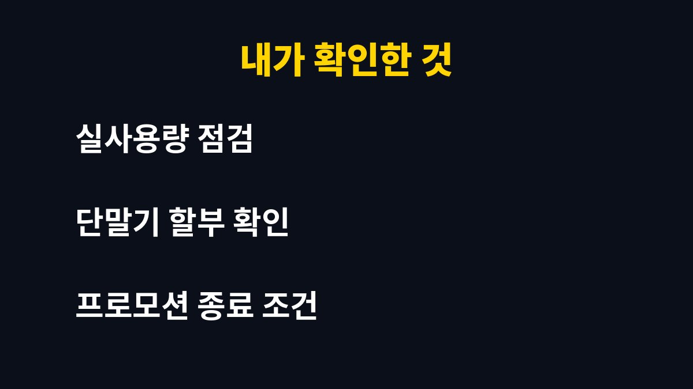

이 글은 통신비를 줄이려고 알뜰폰을 알아보지만 막상 갈아타려니 걱정이 앞서는 사람을 위해 쓴 글이다.
사업과 가정 지출이 겹치다 보니 매달 나가는 통신비를 한번 점검해 본 경험을 정리했다.
알뜰폰 요금제는 광고만 보면 다 좋아 보인다.
나도 처음에는 월 요금이 낮다는 이유만으로 마음이 기울었다.
하지만 사업용 연락과 가족 연락이 한 번호에 걸려 있어서 실수하면 영향이 크다.
그래서 요금보다 확인 순서를 먼저 정리해 보기로 했다.알뜰폰은 잘 쓰면 도움이 되지만 준비 없이 옮기면 번거로운 일이 생길 수 있다.
특히 쇼핑몰 고객 문의 전화를 받는 번호라면 개통이 지연되는 상황은 피하고 싶었다.
가장 큰 걱정은 번호가 바뀌거나 연락이 끊기는 것이었다.
번호이동으로 가입하면 기존 번호를 유지할 수 있다는 점은 확인했다.
다만 가입 방식과 개통 시점은 업체마다 안내가 다를 수 있다.
그래서 가입 전에 해당 업체의 안내를 직접 읽어 보는 습관을 들였다.유심을 받는 방식도 택배, 매장 수령, 다이렉트 개통 등 업체마다 다르다.
어떤 방식이 내 일정에 맞는지 먼저 따져 보는 것이 좋다.
가장 먼저 통신사 앱에서 최근 몇 달의 데이터 사용량을 살펴봤다.
생각보다 데이터를 남기는 달이 많았다.
통화는 업무 때문에 필요하지만 문자는 앱 메신저로 대체되는 부분이 컸다.
쓰는 만큼에 맞춰야 비용이 줄어든다는 단순한 결론이 나왔다.집에서는 와이파이를 쓰는 시간이 길어서 모바일 데이터 사용은 의외로 적었다.
이런 패턴은 사람마다 다르니 본인의 기록으로 확인해야 한다.

단말기 할부가 남아 있는지, 약정이나 결합 할인이 걸려 있는지도 확인했다.
이 부분을 모르고 옮기면 절약한 금액이 다른 비용으로 나갈 수 있다.
가족 결합이 있다면 다른 가족의 요금에 영향이 없는지도 살펴야 한다.해지 시점에 따라 마지막 달 요금이 정산되는 방식도 다를 수 있다.
이 부분은 고객센터에서 한 번 더 확인하는 것이 마음 편하다.
나는 요금제를 고를 때 기본 데이터, 소진 후 속도, 통화량 세 가지를 나란히 놓고 봤다.
프로모션 가격은 적용 기간이 끝나면 달라질 수 있어서 정상 요금을 따로 확인했다.
후기 글은 참고만 하고 최종 판단은 업체 공식 안내로 했다.
같은 방식으로 보면 광고에 덜 흔들린다.해외 로밍이나 부가 서비스를 쓰는 경우에는 그 이용 가능 여부도 따로 살펴본다.
통화 품질은 통신망을 빌려 쓰기 때문에 큰 차이가 없다는 설명이 많지만 지역에 따라 다를 수 있다.
그래서 자주 머무는 장소에서 직접 써 보는 확인도 도움이 된다.
| 확인 항목 | 어디서 보나 | 내가 본 이유 |
|---|---|---|
| 데이터 사용량 | 현재 통신사 앱 | 실사용에 맞추기 위해 |
| 단말기 할부 | 고객센터 또는 앱 | 남은 금액 확인 |
| 프로모션 기간 | 신청 화면 안내 | 끝난 뒤 요금 확인 |
표의 항목을 가입 전에 한 번씩 확인하면 놓치는 부분이 줄어든다.
기준이 되는 숫자는 반드시 본인의 현재 요금 내역에서 가져와야 한다.
개통 당일에는 은행 앱과 쇼핑몰 관리 앱의 인증이 되는지 꼭 확인해야 한다.
문제가 있으면 바로 업체 고객센터에 문의하는 편이 낫다.유심을 바꾼 직후에는 기기를 한 번 재부팅하는 것이 좋다.
그래도 신호가 잡히지 않으면 유심이 제대로 꽂혀 있는지 먼저 확인한다.
통신비는 줄이는 것도 중요하지만 연락이 끊기지 않는 것이 더 중요하다.
나는 이 순서로 확인한 뒤에야 마음이 편해졌다.
비슷한 고민이 있다면 서두르지 말고 본인의 사용 내역부터 열어 보기를 권한다.결정은 각자의 사용 습관과 상황에 맞게 하면 된다.
이 글은 구매나 가입을 권하는 글이 아니라 내가 확인한 순서를 나눈 기록이다.
※ 2026년 기준 개인 사용 경험과 공식 발표를 바탕으로 정리한 글이며, 기기·앱 버전에 따라 메뉴 이름이 다를 수 있다.